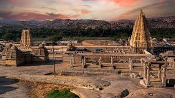

Introduction
The Vijayanagara Empire stood as a bulwark against Islamic expansion in South India, fostering art, trade, and architecture.
Virupaksha Temple, the empire's spiritual center at Hampi
Capital City
Hampi's ruins reveal a metropolis that awed foreign travelers with its grandeur.
Military & Economy
The empire controlled spice and cotton trade while maintaining a powerful cavalry.